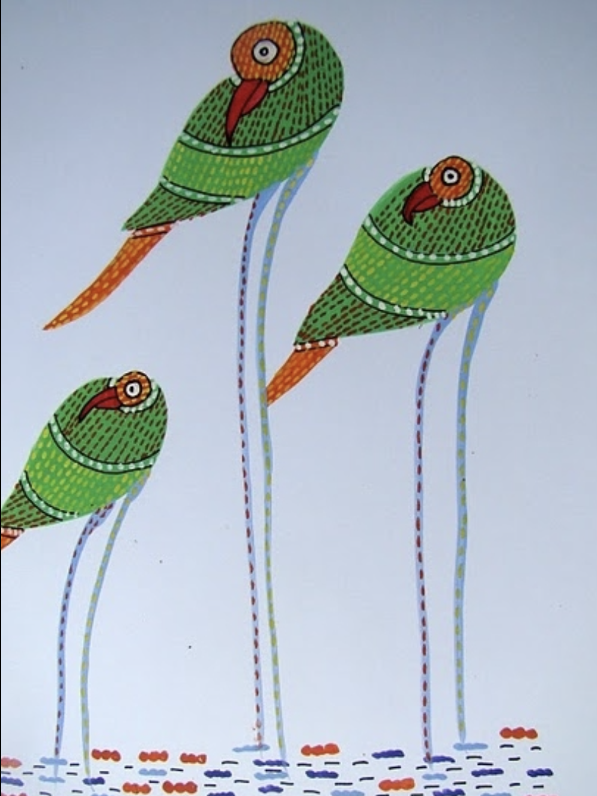

1. Through our virtuous portfolio software startup - chattodo.preseed.in.
2. Through our virtuous portfolio educational startup - math.preseed.in.
3. Through our spiritual Youtube channel - Noshow.
Nishchal had started Preseed to take a form of an earliest stage tech incubator, that has mastered the art of inspiring MVPs with little to no money, starting with his own 2 startups mentioned above, in Social Networking and Math.
Other Preseed Startups (through TSF)
On the above section on our homepage we will list only those startups which are built by Nishchal & team out of Nishchal's own itch and fundamental ideas. Preseed has been essentially built as a machine where Nishchal can float such lofty ideas and see them take shape. Basically, startups born in Preseed out of its first purpose of assisting Nishchal's lofty goals, are Preseed homepage worthy startups, directly and by default, for they are what are inseperable from the brand of Preseed. Infact, it is the story of Preseed is that is giving birth to them.
Furthermore, the relevance of making Preseed home page around only Nishchal's startups ensures - Preseed must and will first only represent that which it was started to do - which is, assisting in the creation of Nishchal's own startup MVPs, above all else. For, in Nishchal's altruism we trust the most. We trust that he will make for only altrusitic reasons, both startups and money. For him altruism is not a cliche from the world of righteousness. It is a real state of heart of some. The fewest in the world is this breed.
For all other startups in the world, interested in us - TSF is an independent investment facilitation unit of Preseed that may or may not have the same terms as Preseed. Our financial expert and investment advisor, Kartik, decides those terms based on each independent case at TSF. He will get in touch with you after you apply in TSF.
Now, since Nishchal has achieved MVP level goals with his own 2 startups, Preseed will aid you too in building your startups the way Preseed aided in co-building Nishchal’s above mentioned two Startups - MIND OVER MATTER. So, Preseed is being made available through its investment banking team and its upcoming startup fund, TSF (The Simple Fund), for you and your startups, shortly.
Until 2020, we had been merely a tech incubator or assistance for Nishchal’s own startups.
Now we endeavor to be sharers of his and his team’s knowledge for you, our dear entrepreneurs. We are essentially made up of the human and leadership values that were used by Nishchal to build his narrative, teams, and software/math startups.
The narratives of Preseed are so strong, vast, coehesive, logical and soulful, that lessons from our words will help you onboard your teams on equity commitments instead of salaries. These are the narratives with which Nishchal had started Preseed, and his products, Tododed.co , Chattodo.co, and MathEdLabs.com - by replacing money with inspiration. In fact he has built his products to enable you to achieve exactly that culture of leadership, our dear founders, in a scalable way.
Any meaningful advise we may have for you, will be conveyed, proactively, forever spanning accross all functions of your business.
Nishchal wants to give greater freedom to humans in order to make a few among them, a new breed of conscientious humans. We believe that the right time has come to fulfill that goal through this incubator and his main products/startups.
This is also the right time for political will to join that same entrepreneurial goal. For our political will just know our founder, and his works by exploring the links on our menu bar. DO UNDERSTAND PHILOSOPHICAL DEPTHS of this world of Nishchal represented in great detail through this website of Preseed. It will instill in you the drive to do something really innovative.
His main startup for you is, us, Preseed:
“I journeyed into Preseed to empower those with a will to do something out of the ordinary - by often encouraging them to drop out of their colleges or jobs to pursue their lofty ideas, if I felt I could raise their intensity to face what may be coming. Why? Long ago, I asked myself the question about what is the one thing I must do with my capabilities - the answer I got was - I must do everything I can, to give our world, better leaders. As I progressed I was able to marry in vision, my previous failed social networking startup of 2009 to become now, a more conscious social network vision, to produce the goal of producing better leaders. The frist startup mentioned above is that, Chattodo. In order to do it in an artificially intelligent way all the way to one day being recognised as an India made, world's NO. 1 social network for those interested in a truthful life, I need Indian students to master Mathematics. So, Math Ed Labs, my second startup. Preseed is my zeroth startup. I am Preseed”.
Nishchal was clear about his lofty goals from his days post Samadhi in, 2012. In 2016, he expressed them as a mission oritented lover, in about 1 minute:
"Your blessings towards us will lead us into solving the problem of media and social media-induced cultural programming through which one perceives. It’s a mass hallucination of the herd, by the herd, for the herd. I wish to help humans snap-out of lies, to see their actual individual worth beyond group-isms" - Nishchal.
6 years forward, and we understand how unfathomably complex this problem is and how many facets it has from education, politics, judicial system to religion and spirituality, if it is to be attempted truly conscientiously.
"The formulation of the problem is often more essential than its solution, which may be merely
a matter of mathematical or experimental skills".
"One such problem, our founder, Nishchal, has given up everything else for, is, lack of actual freedom for billions of people. The solution is, his idea of the future of freedom for billions of people to pursue their loftiest, unchained visions, through the power of his tech product, Chattodo-a social network of work deliverables, or, A SOCIAL NETWORK OF ACTION. This social network one day will appear to be the singular mammoth culmination of all innovation that will be found to be on this homepage. ".
In 2019, Nishchal is inviting you in www.preseed.in through a 5 minitues monologue over its seemingly abstract elements.
THE STARTUPS BAKING AT PRESEED ARE BASED ON THIS GUIDING PRINCIPLE. WE HAVE BUILT THESE STARTUPS FROM SCRATCH STRAIGHT OUT OF OUR VERY OWN ITCH AS CITIZENS OF A CONNECTED WORLD.
We are making potentially life-changing products as startups that will enable people to expreince greater freedom in life. Those product startups will be likely founded by Nishchal and will be listed on this homepage. Every other startup from our portfolio will be listed on webpage of our startup fund, TSF.
Anyway, so, on a journey to inspiring a bunch of very talented people to JOIN HIM on his mission to empower the entrepreneurs through thoughtful ideas at Preseed, Nishchal has garnered a truly original perspective on business building and life, from bottom up. The ingredients he has built Preseed so far with, have been anything but money. Hence, his ability to bootstrap is second to perhaps a very few. His ability to inspire is also second to a very few. Apart from that being an advantage to our portfolio companies in building their teams, his eye for design and novelty make him an incredibly good critic to our portfolio startups.

A political opposition that is unafraid to be the opposition. That is what we will become someday ✊.
Giving India its audacious opposition party by 2029, made up of millions of educated and rational Indian
youth.
EDUCATION, DEMOCRACY, JUDICIARY, RELIGION, SPIRITUALITY (YOGA), SCIENCE, TECHNOLOGY, PLANTS, FOOD, OCEAN, SHELTER,
FEMINISM, PATRIARCHY, SUBSTANCE ABUSE, MENTAL HEALTH, AND, PERHAPS, A NEW POLITICAL PARTY TOO.
All to be woven into one app. That is the product the below mentioned man is building.
After the product, Nishchal intends to get on the journey to take its impact along with Preseed's to the grass roots of India. He will be among your primeminesterial candidates someday with strength of character and awareness, through the contemporary self, unlike any other Primeminesterial contender of the past.
.
How will we measure that? By actually finding out, the obvious - life of action historically, if need be, from birth; and - how many unprincipled, easily
swayed, infirm (but, only conviniently firm about dogmas and easily sold to money to comprimise on dogmas, simultaneusly, दोग़ला/double faced), corrupt, lazy, dumb, obstructive, evil, dramatic, passive, aggressive and bitter forces did that person
righteously piss off to hold his culture's values intact regardless of the costs.
In case of Nishchal we can safely say, many, and still counting. He bets, the same people who he may have piseed off may still have grand words for him if they speak from their silent core. Why? For, only truth he revered. We are not talking about ordinary kind of pissing of with one's audacity. We
are
talking about, pissing off the wrong one pointing the gun on you, kind of pissing off. Why? Because in law of
the land
he trusts.
So, we will bow down to nothing, no one, except the law of the land. For the culture at Preseed,
Nishchal will ensure is the culture of truth and fearlessness. Culture is everything. Our culture is about technological research and development, above all else that you will find here.
Our app called Chattodo/कार्यकरता is our next step for you. It is here that that our party members will communicate and collaborate with each other to craft our vision of India. Our party Chatbot will take your onboarding forward. To know about Chattodo and its vision, visit its full vision on chattodo.preseed.in/vision.
We want to give greater freedom to humans in order to make a few among them, a new breed of conscientious humans. We believe that the right time has come to fulfill our goal and this is also the right time for political will to join that same entrepreneurial goal. For, we are first building this app to launch our founder, Nishchal's own political movement. His party may become the first political party in the world to have its 'own' communication app. RSS can continue on whatsapp while Nishchal's party will build its members force on Chattodo.
We are ensuring for us, that we have a role to play in the election of the future prime minister of India, by way of the questions we will ask, and the answers we will revceive from what will be know as the Preseed team. May the best human win! Whether from the Preseed team or not, is secondary for us. So, the establishment will always be asked questions and/or shown pathways by way of our prototypes. We invite them to do what we are doing, for the sake of our country, BHARAT, that is India. And, if they do, our goal would be achieved!
10% - Preseed keeps a minimum of 10% equity in its portfolio startups. One day, 100% of the wealth Preseed will make through its exit will support the making of OUR POLITICAL PARTY.
Manifesto
NOTE: The founder is the company's culture and manifesto first. If you know our founder, you know what can happen in favour of India if he is successful in building this incubator, Preseed, exactly as envisioned. Although, the truth is, life is a matter of cosmic waves, larager than oceanic waves. So it is what happens when we are busy making other plans. Often the plans we make that work out, are infact the plans that got made out of a non work state of mind. Anyway, if we digress in the direction of the last statement, you will have to know from Nishchal, directly, what is all we humans have the free will for then, if outcomes are already written by 'GOD', which is not even there. WOAH! Not even there. WTF? Anyway, let us get back to work for now. So, he has given Preseed its action, altruism, unwavering will, two portfolio startups, space and culture. He is shouldering the responsibility from the front of bringing about the changes in the world reflecting from, the Preseed Home Page Startups, Preseed website words and permanent workation culture at Preseed. Join us on this mission dear lovers, friends and foes. For this is a mission about your own country and your global fellow beings.
"If there was a Googlesque new organisation from India in 2022, It would look like us in its nascent stages. With the backing of Preseed, Chattodo has the potential to be such a company. Everything at Preseed has been designed for that 1 goal first" - Nishchal .
Lastly, if you know Y Combinator, wish for Preseed to become the Y Combinator of India. Also wish that Preseed's portfolio startups are successful as widely as the startups of Y Combinator were, in the near future. In short, www.preseed.in is the ongoing manifesto of India's future decades. Our endeavour is ongoing. Don't just forgive us for our mistakes, teach us too.
PVPL Legal - This is our publication for our legal drafts, policies, collaborator contracts or term sheets. From here all those who want to shake hands with us can find our terms. This publication is expected to be completed by the end of 2022.
Invest in our portfolio.
To non-matter and back, cut me some slack. https://t.co/8vHcwiPg9T
">
Here a 10+ billion dollars value company, Slack, is appreciating Nishchal's first product, in 2016.
Our Math Startup demo
Nishchal's vision for our children, in the above video, and, the above tweet can only be truly undestood after researching him. So, you may totally skip the above video for now, if you wish.
On his webpage we are revealing the depths of Nishchal to the best of our abitlity. There you will find content worth 3 great books of our times in the making, made up of blogs and videos instead, that will be known to have gone beyond your definitions of honor-dishonor, black-white, god-nogod. So colorful is his spirit. We have spent 1 full year, 2021-2022, in organising its associated content including its menu bar. May his dreams, rationality and optimism touch each one of you.
Btw, this video is being shot on one of the most difficult, and perhaps a historical day from Nishchal's life. We salute Nishchal's effort of the last 14 years 2007-2021, in giving us such rare social media content.
His content will be among his shiniest legacies several decades down. Why several decades down? Because, majority, the sheep among you, will take that long to wake up.
Mark Zuckerberg is about, break things fast.
Nishchal is about, wait, think, fast.
Preseed Admin + Preseed Essays - Nishchal's Medium essays, video monologues on Youtube, video descriptions there, and discussions across the depths of life, justice, god, innovation, waves, non-matter, politics, his products, and his organisations .
"Through our Medium blog,Preseed Essays , I want to bring more clarity to the public conversation on what’s really happening in the world. Too much of the public discussion is focused either on the wrong issues stemming from past (madhya kaal/middle age of India) or is extremely confused to ever get to discuss the future that science fiction has always revealed as, coming. People are flooded by enormous amounts of repetitive information of ancient past, which they don’t know how to make sense of, so they just do what the herd does, follow each other, blindly, and mostly in surrender to only their egos.
I see my mission as bringing clarity to the public discussion especially in terms of focusing people’s attention on the most important questions that will confront us in 5 years. Question and not answers, for I don’t have all the answers. The important thing is, to agree about the questions. For questions will set the tone of our discourse for the sake of a better future.
Archimedes said if he were given a long enough lever and a place to stand, he could move the world. We have a lever but not a place to stand yet. Support a company that is working tirelessly to walk the talk by creating actual products that if grown for the next 5 years, i.e. 2029, can solve some very important large problems. Of course, if you will, support us by reading and engaging with our content which is an endeavor to make this world a more truthful place. We will create a place to stand. We have sinceere words, and our words must reach your friends too. That alone will suffice. - Nishchal
There are 10 big challenges to humankind in the 21st century -
1. the nuclear war,
2. climate change,
3. technological disruption,
4. pathetic criminal justice system,
5. the selfish capitalism (not, modified capitalism) or mindless consumerism,
6. representative democracy,
7. media accountability,
8. no universal basic income,
9. parenting,
10. Yoga and the education system.
These should be the first 10 items on the political agenda of every country. 10th point is our first point of focus. We expect to graduate over time to cover them all. Yoga be considered the most important, for finding tranquility amidst turbulence. In that, Gyan Yog. Nishchal's essays are about thisand more.
He will continue to add his videos fromour Youtube channel called Preseed Admin too, in these essays, at the right places, so as to put his thoughts spread across years in an all rounded cohesive perspective for even the least intelligent.
We request you to read the descriptions on each Youtube video.
In totality, Nishchal effort on this essay are made up of about 100000+ words. So, if you go through them you will go through, say, 20+ Chapters worth of reading to understand, how serious we are about changing the world around you — through the culmination of it all into codes to make that change as is expressed through this website, merealy a doorway.
Don't click on the above links yet, for they are a work in progress, and will remain so for long periods of time. For, Nishchal's goal is to be an entreprenuer of magnitiude, not an author of magnitude. MOreover, we don't have a replacement of him on authorship, not yet. So, we are looking for one to make a dedicated career out of authorship at Preseed, all the way to drafting Preseed's political manifesto for India, upon which Nishchal expects to see the birth of a new political party in India, from the future. If you are that person, get hold of Nishchal.
Dharma, Karma and Sewa
Karma:
Karma means action; an action can either bind or liberate you. If action is in pursuit of happiness, it binds and if it is an expression of happiness it liberates. Only if your action is an expression of your joy it is worthwhile otherwise it is just an exploitation.
Dharma:
There are certain rhythm which governs the functioning of life and existence. These rhythm can be called as laws or Dharma. Dharma exist at every sphere of life. If an action or Karma follows the appropriate rhythm or Dharma then it is correct in existential terms otherwise it is destructive.
Sewa:
Being available is seva. Like the Sun, the wind, fruits etc. The most fundamental law or Dharma of existence is Seva. Seva appropriates life and gives a meaning to it.

When Karma, Dharma and Seva fall in the same line then the whole effort is called as Karma yoga. At some point the whole economics of India was designed on this line and evidence proves that it was the most successful and holistic. We endeavour to revive it through Preseed For, here, all products we build are true to the altruistic values expected only from a non dogmatic yogi.